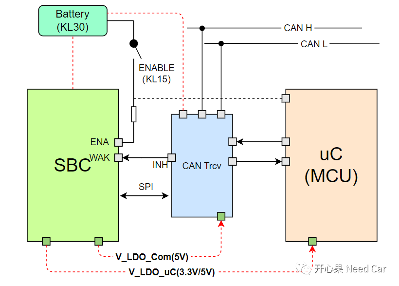

开心果 Need Car · 2023-06-30T07:46:00+08:00 · 微信原文
电源管理芯片（SBC：System Base Chip）是控制器（MCU）外围器件工作电压的提供者，没有SBC供电，控制器的外围器件则无法工作。使用SBC主要目的：降低硬件系统设计的复杂度和成本。可见，SBC在控制器开发中的重要性。对于商业行为，我们知道，降低成本意味着利润的提高，而且，有利于产品抢占更大的市场份额。
搜索一下SBC，发现：市场上，SBC的种类非常丰富，而且采购量越大，SBC单件的成本越低。可是，为什么很多Tier1还要付出更高的成本，自研SBC或者让第三方代工SBC呢？
1、SBC的作用

2、Tier1为什么要自研SBC
市场已经有这么丰富和低廉价格的SBC，为什么Tier1还要投入研发呢？谈一下个人看法。换位思考，如果我们是Tier1，卖某款产品，eg:整车控制器（VCU）。我们希望自己的产品被同行或者第三方逆向吗？答：显然不愿意。所以，如果使用市场上通用的，随处可以买到的SBC，意味着产品极有可能被逆向和仿制。所以，Tier1设计产品时使用自己的SBC，也就意味着被他人仿制的可能性降低，进而有效的保护自家产品的市场份额。
其次，增加客户对产品的依赖度。如果OEM采购了此Tier1的产品，意味着OEM以后遇到此产品的问题，只能联系此Tier1维修或者更换。这种做法，其实每家都在做，都在绞尽脑汁的提升产品对客户的黏性，这里的黏性不光是优质的产品本身，产品对应的工具链和软件也很“黏人”。很多公司为了拿到更多的市场份额，不仅仅是重拳广告营销，它们也会通过多种渠道，eg:自媒体、视频平台、文案等方式进行大量免费培训，让更多工程师可以快速上手它们的工具和软件，进而形成良性市场口碑。
当然，也可能有更多深层次的原因是我所不知晓的。所以，基于以上的可能，在汽车嵌入式开发中，你可能听过SBC各种各样的别名，eg：PWMU（Power Manage Unit）、PSU（Power System Unit）、ASIC、EPIO等等。
进一步思考，Tier1既然都研发SBC了，其他芯片也自己研发不可以吗？这样做，显然不现实，核心问题还是：成本。也就是投入产出比不能过大，能有杠杆效应最好，以小博大，赚取最大利润。芯片本身是一个高精科技产品，研发成本很高。Tier1生产控制器产品，而一个控制器一般会用到几个或者数十个芯片，每个都去研发，显然不现实。但是，Tier1又不可能所有芯片都从市场采购，变成一个“组装厂”，因为这样做，意味着产品很快被“义乌”。所以，Tier1在考虑产品利润的同时，也需要考虑产品的不可逆向。达到此目的，选取SBC自研或者让第三方代工生产或许就是一个不错的选择。
往期精彩回顾
基于Hightec+TC375TP的RT-Thread移植详解